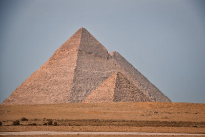

Pirâmides do Egito
As pirâmides do Egito são símbolos marcantes da civilização antiga que representam a crença na vida após a morte e o poder dos faraós. Com características distintivas, como as grandiosas pirâmides de Quéops, Quéfren e Miquerinos, essas estruturas foram construídas com precisão e usando blocos de pedra maciços. Erguidas durante a terceira até a sexta dinastia, a construção das pirâmides envolveu força de trabalho massiva, planejamento meticuloso e técnicas avançadas de transporte de blocos e criação de rampas. Curiosidades fascinantes, como o alinhamento astronômico, e teorias especulativas sobre sua construção aumentam ainda mais o mistério em torno dessas estruturas. A escolha criteriosa de materiais, como pedra calcária, granito e basalto, destaca a busca pela durabilidade. As câmaras internas decoradas com hieróglifos revelam propósitos religiosos e simbólicos, adicionando camadas de significado às pirâmides do Egito, que continuam a ser fonte de admiração e perplexidade.
